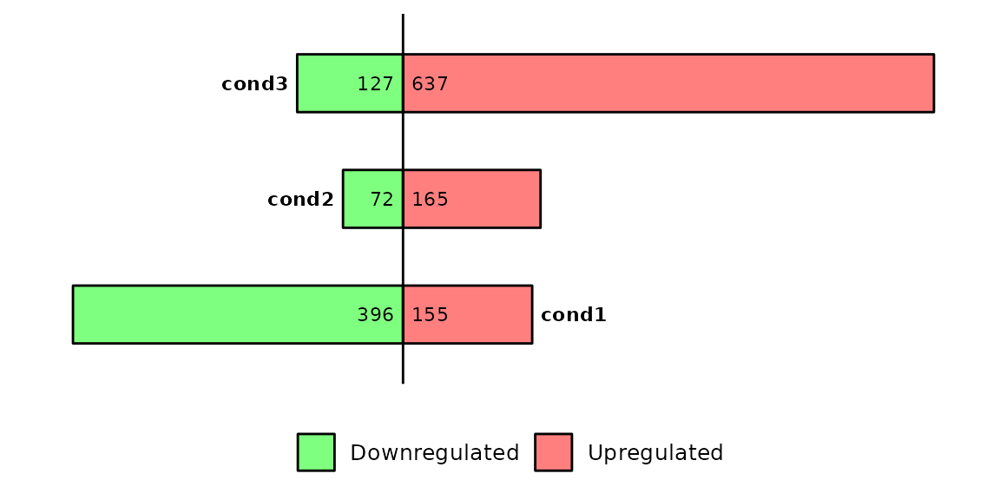
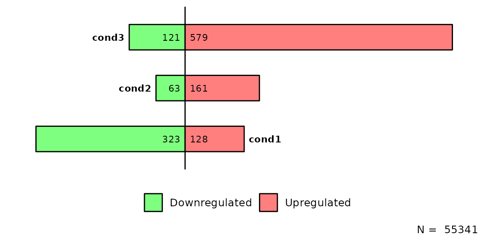
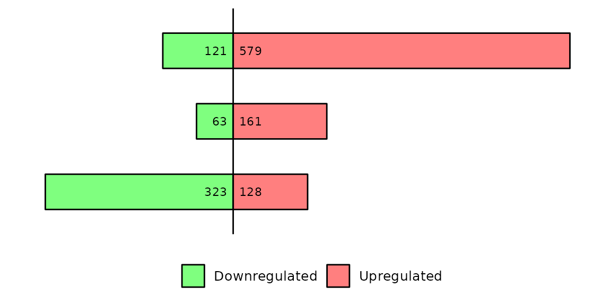

Run barDEGs()
barDEGs() draws an ggplot2-based horizontal barplot with the nubmer of upregulated and downregulated genes coming out from a DESeq analysis.
Required inputs
As input, barDEGs takes a named list of data frames with the columns log2FoldChange, padj and DEG. The DEG column must have the values Upregulated, Downregulated and NS.
# read the dataframes into a list
deg_list <- list.files("../testdata", "diff_exp", full.names = T, recursive = T) %>%
purrr::set_names(paste("cond", 1:3, sep = "")) %>%
purrr::map(~read.delim(.x))
deg_list[[1]] %>% head()## Geneid ENSEMBL log2FoldChange padj DEG
## 1 Gsdmc2 ENSMUSG00000056293.12 2.69 9.334654e-29 Upregulated
## 2 Gsdmc4 ENSMUSG00000055748.12 2.66 1.060432e-28 Upregulated
## 3 Car4 ENSMUSG00000000805.18 2.11 1.883150e-25 Upregulated
## 4 Duoxa2 ENSMUSG00000027225.7 2.97 2.097922e-22 Upregulated
## 5 Neat1 ENSMUSG00000092274.3 -2.25 2.097922e-22 Downregulated
## 6 Gsdmc3 ENSMUSG00000055827.13 2.51 9.601422e-20 Upregulated
Change thresholds
By default, barDEGs() uses a pval = 0.05 and log2FC = 1. If you want to set another thresholds to define the differentially expressed genes, you can change these parameters.
barDEGs(deg_list = deg_list, pval = 0.1, log2FC = 1)
Avoid thresholds
If your data frames don’t have a log2FoldChange or padj columns, or if you do not want to use those columns, you can turn both log2FC and pval to NULL and they won’t be used to define the differentially expressed genes.
Have in mind that, if you set log2FC and pval to NULL, your data frames must have a DEG column with the values NS, Downregulated and Upregulated.
# define a new list with different DEG values
# also remove the columns log2FoldChange and padj
deg_list_changed = deg_list %>% purrr::map(~dplyr::mutate(.x, DEG = ifelse(padj > 0.001, "NS", DEG)) %>% dplyr::select(-log2FoldChange, -padj))
# run barDEGs with log2FC and pval equal to NULL
barDEGs(deg_list = deg_list_changed, log2FC = NULL, pval = NULL)
Note that the number of differentially expressed genes has been reduced because we reduced the p-value threshold.
Also note that the data frames that were used lack the previously required columns log2FoldChange and padj.
Count total
barDEGs() has the possibility to count the number of regions/genes in each element of the list and writting them to the caption by setting total = TRUE. In case all elements in deg_list have the same number of genes, the caption will be N =
barDEGs(deg_list = deg_list, total = T)
Compute p-value
Since v4.0.0 it is possible to do a proportion test (prop.test()) to compute a p-value and look whether the proportion of up and downregulated genes is significantly different from a 0.5.
To compute the p-value from the prop.test(), it is necessary to set prop_test = T.
If prop_test is set to TRUE, the name of the contrast will be written to the left of the bars and the p-value will be written to the right.

Briefly, barDEGs() takes the number of up and down regulated genes, the total number of differentially expressed genes and the expected proportions, which are 0.5. Inside barDEGs(), the prop.test() function is the following one:
# Example of prop.test with one contrast (e.g. cond1)
data <- plot$data %>% dplyr::filter(contrast == "cond1")
# number of up and downregulated genes
up <- data %>% dplyr::filter(DEG == "Upregulated") %>% dplyr::pull(n)
down <- data %>% dplyr::filter(DEG == "Downregulated") %>% dplyr::pull(n)
# number of differentially expressed genes
de = up+down
# do prop.test()
prop_test = prop.test(x = c(up,down), n = c(de,de), p = c(0.5,0.5))
# p-value
prop_test$p.value## [1] 5.72898e-37Customize plot

Position of condition labels
barDEGs(deg_list = deg_list, name_pos = "right")
barDEGs(deg_list = deg_list, name_pos = "left")
barDEGs(deg_list = deg_list, name_pos = "none")
Titles
barDEGs() has the possibility to add title and subtitle directly without adding any other layer. To add them, use the arguments title and subtitle.
barDEGs(deg_list = deg_list, title = "This is a title", subtitle = "this is a subtilte")Further costumization
Since barDEGs() outputs a ggplot2-based barplot, it can be further customized with scales or theme, etc.